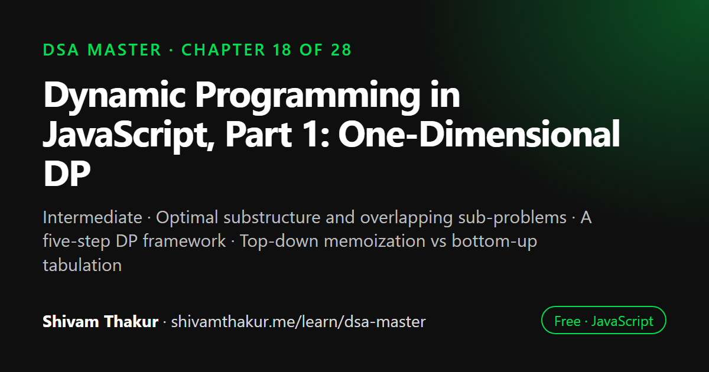

Chapter 18 of 28 · Intermediate
Dynamic Programming in JavaScript, Part 1: One-Dimensional DP
The Dynamic Programming Masterclass, Part 1 — One-Dimensional DP

Dynamic programming solves a problem by breaking it into overlapping sub-problems, solving each one only once and reusing the stored answers. It applies when a problem has optimal substructure and overlapping sub-problems. This chapter teaches a five-step framework for any DP problem, compares top-down memoization with bottom-up tabulation, and works through four classic one-dimensional problems.
In this chapter you will learn
- Optimal substructure and overlapping sub-problems
- A five-step DP framework
- Top-down memoization vs bottom-up tabulation
- Space optimization of DP tables
- Climbing Stairs, House Robber, Coin Change, LIS
18.0 You Already Understand Dynamic Programming — You Just Haven't Named It Yet
Here is the single most reassuring, most important sentence in this chapter: you built your first dynamic programming algorithm in Chapter 2, section 2.5, when you memoized Fibonacci. Dynamic Programming (DP) is not a mysterious new universe of technique — it is the direct, systematic extension of exactly that insight: recursive problems with overlapping sub-problems can be solved dramatically faster by never recomputing the same answer twice. This chapter and the next formalize that single idea into a complete, repeatable framework, worked through a large family of classic problems.
18.1 The Formal Definition and the Two Required Properties
Definition: Dynamic Programming is a technique for solving problems by breaking them into overlapping sub-problems, solving each unique sub-problem exactly once, and storing (caching) its result for reuse.
A problem is a good candidate for DP if and only if it has both of these properties:
18.1.1 Optimal Substructure
Definition: A problem has optimal substructure if an optimal solution to the problem can be constructed from optimal solutions to its sub-problems.
18.1.2 Overlapping Sub-problems
Definition: A problem has overlapping sub-problems if a naive recursive solution solves the exact same sub-problem multiple times.
18.2 The Five-Step DP Framework
This is the systematic recipe this chapter will apply to every problem, worth memorizing as a checklist you run through explicitly, every single time:
- Define the sub-problem. What does
f(i)(orf(i, j)for 2D — next chapter) actually mean, in plain English? Get this precise before writing any code. - Write the recurrence relation. How does
f(i)relate tof(i-1),f(i-2), etc.? This is the "leap of faith" from Chapter 2, applied explicitly. - Identify the base case(s). What is
f(0)orf(1)directly, with no further recursion needed? - Decide: top-down (memoization) or bottom-up (tabulation)? Both compute the same answer; the trade-offs are covered in section 18.3.
- Determine the final answer's location. Is it
f(n)? The maximum over allf(i)? Something else entirely? Don't assume — verify against the problem's actual question.
18.3 Top-Down (Memoization) vs. Bottom-Up (Tabulation)
18.3.1 Top-Down: Recursion Plus a Cache (Direct Extension of Chapter 2)
function fibTopDown(n, memo = new Map()) {
if (memo.has(n)) return memo.get(n);
if (n <= 1) return n;
const result = fibTopDown(n - 1, memo) + fibTopDown(n - 2, memo);
memo.set(n, result);
return result;
}This is exactly Chapter 2's memoized Fibonacci, verbatim. Nothing new has been added yet — we're establishing that top-down DP is simply "recursion, with the five-step framework applied explicitly and consciously."
18.3.2 Bottom-Up: Building the Answer Iteratively From the Base Case Upward
function fibBottomUp(n) {
if (n <= 1) return n;
const dp = new Array(n + 1);
dp[0] = 0;
dp[1] = 1;
for (let i = 2; i <= n; i++) {
dp[i] = dp[i - 1] + dp[i - 2]; // the SAME recurrence relation, just computed FORWARD, not recursively
}
return dp[n];
}18.4 Worked Problem 1: Climbing Stairs
The problem: you're climbing a staircase with n steps, and can climb either 1 or 2 steps at a time. How many distinct ways can you reach the top?
Step 1: Define the Sub-problem
f(i) = the number of distinct ways to reach step i.
Step 2: The Recurrence Relation
To reach step i, your very last move was either a 1-step (coming from step i-1) or a 2-step (coming from step i-2). Every distinct way to reach step i is accounted for by exactly one of these two cases, so: f(i) = f(i-1) + f(i-2).
Step 3: Base Cases
f(0) = 1 (there's exactly one way to be at the ground: do nothing). f(1) = 1 (exactly one way to reach step 1: a single 1-step).
function climbStairs(n) {
if (n <= 1) return 1;
const dp = new Array(n + 1);
dp[0] = 1;
dp[1] = 1;
for (let i = 2; i <= n; i++) {
dp[i] = dp[i - 1] + dp[i - 2];
}
return dp[n];
}
console.log(climbStairs(5)); // 8Dry Run
dp[0]=1, dp[1]=1
dp[2] = dp[1]+dp[0] = 1+1 = 2
dp[3] = dp[2]+dp[1] = 2+1 = 3
dp[4] = dp[3]+dp[2] = 3+2 = 5
dp[5] = dp[4]+dp[3] = 5+3 = 8
Final: 8 distinct ways to climb 5 stairs.18.5 Worked Problem 2: House Robber
The problem: given an array of non-negative integers representing money in houses along a street, determine the maximum amount you can rob without robbing two adjacent houses (an alarm triggers if two adjacent houses are both robbed).
Step 1: Define the Sub-problem
f(i) = the maximum amount robbable considering only houses 0 through i (inclusive).
Step 2: The Recurrence Relation — The "To Include or Exclude" Decision
At house i, you face exactly one binary decision, directly echoing Chapter 2's subset-generation "include or exclude" framing: rob house i, or don't.
- If you rob house
i: you getnums[i]plus whatever the best result was up through housei-2(you cannot have also robbed housei-1, or the alarm triggers). - If you don't rob house
i: you get exactlyf(i-1)(the best result achievable without touching houseiat all).
f(i) = max(nums[i] + f(i-2), f(i-1))
function rob(nums) {
if (nums.length === 0) return 0;
if (nums.length === 1) return nums[0];
const dp = new Array(nums.length);
dp[0] = nums[0];
dp[1] = Math.max(nums[0], nums[1]);
for (let i = 2; i < nums.length; i++) {
dp[i] = Math.max(nums[i] + dp[i - 2], dp[i - 1]);
}
return dp[nums.length - 1];
}
console.log(rob([2, 7, 9, 3, 1])); // 12 (rob houses 0, 2, 4: 2+9+1=12)Dry Run
nums = [2, 7, 9, 3, 1]
dp[0] = 2
dp[1] = max(2, 7) = 7
dp[2] = max(nums[2]+dp[0], dp[1]) = max(9+2, 7) = max(11, 7) = 11
dp[3] = max(nums[3]+dp[1], dp[2]) = max(3+7, 11) = max(10, 11) = 11
dp[4] = max(nums[4]+dp[2], dp[3]) = max(1+11, 11) = max(12, 11) = 12
Final: 12 ✓ (matches robbing houses at indices 0, 2, 4: values 2+9+1=12)18.6 Worked Problem 3: Coin Change (Minimum Coins)
The problem: given coin denominations and a target amount, find the minimum number of coins needed to make that amount (or determine it's impossible).
Step 1: Define the Sub-problem
f(amount) = the minimum number of coins needed to make exactly amount.
Step 2: The Recurrence Relation
For each coin denomination c, if we use one of that coin, we need f(amount - c) more coins to cover the rest. We want the minimum over all possible first-coin choices: f(amount) = 1 + min(f(amount - c)) for every coin c where c <= amount.
Step 3: Base Case
f(0) = 0 (zero coins needed to make an amount of zero).
function coinChange(coins, amount) {
const dp = new Array(amount + 1).fill(Infinity);
dp[0] = 0;
for (let currentAmount = 1; currentAmount <= amount; currentAmount++) {
for (const coin of coins) {
if (coin <= currentAmount) {
dp[currentAmount] = Math.min(dp[currentAmount], dp[currentAmount - coin] + 1);
}
}
}
return dp[amount] === Infinity ? -1 : dp[amount];
}
console.log(coinChange([1, 2, 5], 11)); // 3 (5+5+1)Dry Run (Abbreviated)
coins = [1,2,5], amount = 11
dp = [0, Inf, Inf, ..., Inf] (length 12)
currentAmount=1: coin=1(<=1): dp[1]=min(Inf, dp[0]+1)=1. coin=2,5: too big, skip.
currentAmount=2: coin=1: dp[2]=min(Inf,dp[1]+1)=2. coin=2: dp[2]=min(2,dp[0]+1)=min(2,1)=1. coin=5: skip.
currentAmount=3: coin=1: dp[3]=min(Inf,dp[2]+1)=2. coin=2: dp[3]=min(2,dp[1]+1)=min(2,2)=2. coin=5: skip.
...
currentAmount=5: coin=1: candidate dp[4]+1. coin=2: candidate dp[3]+1. coin=5: candidate dp[0]+1=1.
dp[5] = 1 (using a single 5-coin!)
...
currentAmount=10: dp[10] = 2 (5+5)
currentAmount=11: coin=1: dp[10]+1=3. coin=2: dp[9]+1. coin=5: dp[6]+1.
Best turns out to be dp[10]+1 = 3 (5+5+1) -- matches!
Final: dp[11] = 3 ✓18.7 Worked Problem 4: Longest Increasing Subsequence (LIS)
The problem: given an array of integers, find the length of the longest strictly increasing subsequence (elements need not be contiguous, but must maintain their original relative order).
Step 1: Define the Sub-problem
f(i) = the length of the longest increasing subsequence that ends exactly at index i.
Step 2: The Recurrence Relation
f(i) = 1 + max(f(j)) for every j < i where nums[j] < nums[i] (extend the best subsequence ending at any earlier, smaller element) — or just 1 alone, if no such j exists (the element starts its own subsequence).
function lengthOfLIS(nums) {
const dp = new Array(nums.length).fill(1); // every element is, at minimum, a subsequence of length 1 (itself)
for (let i = 1; i < nums.length; i++) {
for (let j = 0; j < i; j++) {
if (nums[j] < nums[i]) {
dp[i] = Math.max(dp[i], dp[j] + 1);
}
}
}
return Math.max(...dp); // the answer is the MAXIMUM across ALL dp[i], not just dp[n-1]!
}
console.log(lengthOfLIS([10, 9, 2, 5, 3, 7, 101, 18])); // 4 ([2,3,7,101] or [2,3,7,18])Dry Run (Abbreviated)
nums = [10, 9, 2, 5, 3, 7, 101, 18]
dp = [1, 1, 1, 1, 1, 1, 1, 1] initially
i=1 (9): j=0 (10): 10<9? No. dp[1] stays 1.
i=2 (2): j=0(10),j=1(9): neither < 2. dp[2] stays 1.
i=3 (5): j=0(10)No, j=1(9)No, j=2(2): 2<5 YES -> dp[3]=max(1,dp[2]+1)=max(1,2)=2
i=4 (3): j=2(2): 2<3 YES -> dp[4]=max(1,dp[2]+1)=2. j=3(5): 5<3? No.
i=5 (7): j=2(2):2<7->dp[5]=2. j=3(5):5<7->dp[5]=max(2,dp[3]+1)=max(2,3)=3. j=4(3):3<7->dp[5]=max(3,dp[4]+1)=max(3,3)=3
i=6 (101): every earlier element is < 101! dp[6] = max(dp[0..5]) + 1 = max(1,1,1,2,2,3)+1 = 3+1 = 4
i=7 (18): j=0..5 all < 18 except maybe... 10<18,9<18,2<18,5<18,3<18,7<18 all YES, 101<18 NO
dp[7] = max(dp[0..5])+1 = 3+1 = 4
Final dp = [1,1,1,2,2,3,4,4]
Answer = max(dp) = 4 ✓- Time: O(n²) — the nested loop, exactly Chapter 1's "nested loops multiply" rule.
- Space: O(n) for the
dparray.
18.8 Edge Cases and Gotchas Checklist for 1D DP Problems
- Empty input array. Verify your base cases handle
nums.length === 0gracefully (often returning0directly, before the DP loop even begins). - Single-element input. Verify
dp[0](or equivalent) is set correctly and directly, without relying on a recurrence that would need a non-existentdp[-1]. - Confusing "count the ways" with "find the optimal value" — these require genuinely different recurrences and, in coin-change-style problems, different loop nesting orders (section 18.6).
- Forgetting the final answer isn't always
dp[n-1]— LIS (section 18.7) is the canonical example where the answer ismax(dp)across all indices, not the last computed entry. - Off-by-one errors in array sizing — should your
dparray be sizenorn+1? This depends entirely on whether index0represents "zero items considered" (needing an extra slot) or "the first item itself." - Missing the space-optimization opportunity — always check whether
dp[i]depends on only a small, fixed window of previous entries (nearly always true for the "linear chain" problems in this chapter), enabling an O(1)-space rewrite. - Negative numbers or zero in the input — for House-Robber-style and Coin-Change-style problems specifically, verify your recurrence and base cases still behave correctly if the input includes zero values or (where the problem allows) negative values.
18.9 Chapter Summary
This chapter delivered on the promise made in its opening line: dynamic programming is not a new universe of technique, but the direct, systematic formalization of the memoization insight first built in Chapter 2. We established the two required properties — optimal substructure and overlapping sub-problems — and a genuinely useful diagnostic test: draw the naive recursion tree, and ask whether any node (any specific sub-problem input) repeats; if so, DP applies. We contrasted this precisely against divide-and-conquer (Merge Sort, Chapter 15), whose sub-problems are disjoint by design, making memoization structurally useless there — a distinction worth being crisp about, since conflating "recursive" with "DP-applicable" is a common conceptual error.
We built the five-step DP framework (define the sub-problem in plain English, write the recurrence, identify base cases, choose top-down or bottom-up, locate the final answer) as a repeatable checklist, and worked it explicitly across four canonical problems. We formalized top-down (memoization) versus bottom-up (tabulation) as two mechanisms computing the identical recurrence in opposite directions — recursion-plus-cache versus an explicit forward-filled table — with top-down's genuine risk of Chapter 2's call-stack depth limit weighed against its "only computes what's actually needed" efficiency, and bottom-up's guaranteed stack safety weighed against computing every sub-problem regardless of necessity.
Working through Climbing Stairs, we discovered its recurrence is literally Fibonacci in disguise — a direct, concrete lesson in pattern transfer across superficially different problem statements — and introduced the O(1) space optimization (tracking only the last one or two values in plain variables rather than a full array) that applies whenever dp[i] depends on only a small, fixed window of prior entries, which we then reapplied identically to House Robber. House Robber itself introduced the "include or exclude" DP family, directly connecting back to Chapter 2's subset-generation framing and Chapter 8's tree-shaped preview of the same idea. Coin Change surfaced one of this chapter's most important, most commonly-tested distinctions: counting the number of ways versus finding an optimal (minimum/maximum) value are genuinely different recurrences, and for coin-counting problems specifically, require a different loop nesting order — coins outer, amount inner — to avoid over-counting reordered-but-identical combinations, a subtlety directly echoing Chapter 17's combinations-versus-permutations distinction now appearing inside DP loop structure. Finally, Longest Increasing Subsequence taught the critical lesson that a sub-problem's definition must sometimes be anchored precisely ("ending exactly at index i," not "considering the first i elements"), and that the final answer is not always dp[n-1] — sometimes it's the maximum across the entire table — while previewing an O(n log n) binary-search-based optimization (Chapter 16, once again) worth knowing exists beyond the O(n²) baseline.
18.10 Revision Notes
- DP requires optimal substructure AND overlapping sub-problems; if the recursion tree has no repeated nodes, DP offers no benefit (contrast with disjoint-subproblem divide-and-conquer, e.g. Merge Sort).
- The five-step framework: define the sub-problem precisely, write the recurrence, identify base cases, choose top-down/bottom-up, locate where the final answer actually lives.
- Top-down (memoization) risks Chapter 2's call-stack depth limit but only computes needed sub-problems; bottom-up (tabulation) is stack-safe but computes the full table regardless of necessity.
- Climbing Stairs' recurrence is literally Fibonacci — train the instinct to recognize familiar recurrences in new problem clothing.
- Many 1D DP problems (Climbing Stairs, House Robber) can be space-optimized from O(n) to O(1) by tracking only the last one or two values, since dp[i] depends on only a small fixed window of prior entries.
- House Robber is the canonical "include or exclude" DP problem, directly connecting to Chapter 2's subset generation and Chapter 8's tree-DP preview.
- Coin Change: "minimum coins" and "count the ways" are different recurrences; counting ways requires coins as the OUTER loop (amount inner) to avoid counting reordered-but-identical combinations — directly echoing Chapter 17's combinations-vs-permutations distinction.
- LIS requires precisely anchoring the sub-problem definition ("ending exactly at index i") and taking the maximum across the whole dp table as the final answer, not dp[n-1] — plus an O(n log n) binary-search-based optimization exists beyond the O(n²) baseline.
18.11 Mind Map (ASCII)
DYNAMIC PROGRAMMING (PART 1: 1D)
|
+------------------+----------+----------+-----------------------+
| | | |
TWO REQUIRED FIVE-STEP TOP-DOWN vs WORKED PROBLEMS
PROPERTIES FRAMEWORK BOTTOM-UP |
| | | Climbing Stairs
Optimal 1. Define f(i) Memoization: recursion = Fibonacci in
substructure 2. Recurrence + cache (Ch.2/Ch.4) disguise! ->
Overlapping 3. Base cases Ch.2 stack-depth risk O(1) space trick
sub-problems 4. Top-down or | |
(diagnostic: bottom-up? Tabulation: iterative House Robber =
does the naive 5. Where's the table-fill, forward "include or
recursion tree ANSWER? (not direction, NO stack exclude" family
repeat nodes?) always dp[n-1]! risk, computes ALL (Ch.2/Ch.8 tie-in)
| sub-problems |
Contrast w/ Coin Change:
Merge Sort's MIN coins vs
DISJOINT COUNT ways =
sub-problems DIFFERENT recurrence
(Ch.15) -- + loop order matters!
no overlap = (coins OUTER for
no DP benefit counting -- echoes
Ch.17 combos!)
|
LIS: f(i) = ending
AT i specifically;
answer = max(dp),
NOT dp[n-1]!
O(n^2) baseline,
O(n log n) via
binary search (Ch.16)18.12 Cheat Sheet
DP QUALIFICATION TEST
=========================
Optimal substructure? Can an optimal answer be built from optimal sub-answers?
Overlapping subproblems? Does the naive recursion tree repeat the SAME sub-problem?
BOTH required -- if subproblems are disjoint (like Merge Sort), DP offers nothing.
FIVE-STEP FRAMEWORK
========================
1. Define f(i) in PLAIN ENGLISH first.
2. Write the recurrence: f(i) = ___ in terms of f(i-1), f(i-2), etc.
3. Base case(s): f(0) = ?, f(1) = ?
4. Top-down (recursion+cache) or bottom-up (iterative table)?
5. WHERE is the final answer? f(n)? max(all f(i))? Something else? VERIFY, don't assume.
TOP-DOWN vs BOTTOM-UP
=========================
Top-down: easier to write from the recursive definition, only computes NEEDED
subproblems, but risks Ch.2's call stack depth limit for large n.
Bottom-up: always stack-safe, but computes the WHOLE table regardless of need.
SPACE OPTIMIZATION CHECK (do this for EVERY 1D DP solution)
================================================================
"Does dp[i] depend on only the last 1-2 entries?" If yes -> compress to O(1)
space using plain tracking variables instead of a full array.
CLASSIC RECURRENCES
=======================
Climbing Stairs: f(i) = f(i-1) + f(i-2) [Fibonacci!]
House Robber: f(i) = max(nums[i] + f(i-2), f(i-1)) [include/exclude]
Coin Change (min):f(amt) = 1 + min(f(amt-c)) for each coin c
Coin Change (ways): coins OUTER loop, amount INNER loop (order matters!)
LIS: f(i) = 1 + max(f(j)) for j<i where nums[j]<nums[i]
ANSWER = max(f(i)) across ALL i, not f(n-1)!18.13 Key Takeaways
- DP requires both optimal substructure and overlapping sub-problems — the "repeated node in the recursion tree" test is the practical diagnostic.
- The five-step framework (define, recur, base case, top-down/bottom-up, locate the answer) applies systematically to every DP problem in this chapter and the next.
- Top-down risks stack depth but computes only needed sub-problems; bottom-up is stack-safe but computes everything — know both and when to prefer each.
- Always check whether dp[i] depends on only a small fixed window of prior entries, enabling an O(n)-to-O(1) space optimization.
- "Count the ways" and "find the optimal value" require genuinely different recurrences and sometimes different loop orders — never assume they're interchangeable.
18.14 20 Multiple Choice Questions
Tap an answer to check it. Your score updates as you go.
Score: 0 / 0 answered (20 questions)
What two properties must a problem have for Dynamic Programming to apply effectively?
What is the practical diagnostic test for "overlapping sub-problems"?
Why doesn't Merge Sort (Chapter 15) benefit from memoization/DP?
What is "top-down" DP also known as?
What is "bottom-up" DP also known as?
What is a genuine risk of top-down DP that bottom-up DP avoids?
What is a genuine inefficiency of bottom-up DP that top-down avoids?
What recurrence does the Climbing Stairs problem share with an earlier chapter's example?
What space optimization applies to Climbing Stairs and House Robber?
What is the "include or exclude" decision at the heart of House Robber?
What earlier chapter previewed the "include or exclude" pattern that House Robber formalizes?
What is the key difference between "minimum coins" and "counting the number of ways" in Coin Change problems?
In Coin Change (counting ways), why must coins be the OUTER loop and amount the INNER loop?
What earlier chapter's distinction does the coin-counting loop-order subtlety directly echo?
In Longest Increasing Subsequence, how must the sub-problem f(i) be precisely defined?
Where is the final answer located in the LIS DP table, and why is this notable?
What is the time complexity of the standard O(n²) LIS DP solution?
What more advanced technique can optimize LIS to O(n log n)?
What should you verify before assuming a DP problem's answer is simply the last computed table entry?
What is the recommended practical approach when unsure whether to use top-down or bottom-up DP?
Show the answer key
1-b, 2-b, 3-b, 4-b, 5-b, 6-b, 7-b, 8-b, 9-b, 10-b, 11-b, 12-b, 13-b, 14-b, 15-b, 16-b, 17-c, 18-b, 19-b, 20-b
18.15 20 Coding Problems
Easy
- Implement
climbStairsboth top-down (memoized) and bottom-up, from memory (section 18.4). - Implement the O(1)-space optimized version of Climbing Stairs, from memory.
- Given an array, use DP to find the maximum sum of any non-empty contiguous subarray (Kadane's Algorithm — a foundational 1D DP problem not yet covered explicitly; derive its recurrence using the five-step framework).
- Implement
rob(House Robber) both with a full dp array and the O(1)-space optimized version, from memory (section 18.5). - Given a triangle of numbers, use DP to find the minimum path sum from top to bottom, moving only to adjacent numbers on the row below.
Medium
- Implement
coinChange(minimum coins) from memory (section 18.6). - Implement
coinChangeWays(counting ways) from memory, explicitly commenting on why the loop order differs from problem 6. - Implement
lengthOfLISfrom memory (section 18.7), and verify the "ending exactly at index i" definition by tracing through a small example by hand. - Given a string, use DP to determine the minimum number of deletions needed to make it a palindrome (hint: relates to Longest Palindromic Subsequence, previewed here ahead of full treatment in Chapter 19's 2D DP).
- Given a "House Robber II" variant where houses are arranged in a CIRCLE (first and last house are now also adjacent), adapt the standard House Robber solution to handle this new constraint (hint: solve it as two separate linear House Robber sub-problems).
Hard
- Given an array of integers, find the maximum product of any contiguous subarray (a trickier variant of Kadane's Algorithm, requiring tracking BOTH a running max AND running min, since a negative number can flip a very negative product into a very positive one).
- Implement "Word Break": given a string and a dictionary of words, determine if the string can be segmented into a space-separated sequence of dictionary words, using 1D DP (directly connecting to Chapter 10's Trie chapter for an optimized dictionary lookup).
- Given a set of numbers, determine if there's a subset that sums to exactly a given target value (the "Subset Sum" problem), using 1D DP over achievable sums.
- Given an array representing stock prices over time, and allowing at most one transaction (one buy, one sell), find the maximum profit achievable using a single-pass DP approach.
- Given an array representing stock prices, allowing UNLIMITED transactions (but not holding more than one share at a time), find the maximum total profit using DP.
Interview Level
- (Google-level) Given a string of digits representing an encoded message (where 'A'=1, 'B'=2, ..., 'Z'=26), use DP to count the number of ways the string could be decoded, handling the tricky edge cases around '0' digits.
- (Amazon-level) Given a list of jobs with start times, end times, and profits, use DP (combined with binary search, Chapter 16, to efficiently find the next compatible job) to find the maximum profit achievable by scheduling non-overlapping jobs.
- (Microsoft-level) Given a budget and a list of investment opportunities each with a cost and expected return, use DP to determine the maximum achievable return without exceeding the budget (a direct preview of the 0/1 Knapsack problem, formalized in full in Chapter 19's 2D DP).
- (Meta-level) Given a social media post's "engagement" over consecutive days, use a Kadane's-Algorithm-style DP approach to find the most engaging consecutive period (maximum subarray sum), and extend it to report the actual start/end days, not just the sum.
- (Netflix-level) Design a "binge-watching" optimizer: given episode watch-times and a limited available time budget per day, use DP to maximize the total number of episodes watchable without exceeding daily time limits, framing this explicitly as a House-Robber-adjacent "include or exclude" decision problem.
18.16 5 Interview Questions
- "What makes a problem a good candidate for dynamic programming?" (Tests understanding of optimal substructure and overlapping sub-problems, not just "it uses recursion.")
- "Walk me through converting a recursive solution to a bottom-up DP solution." (Tests fluency between top-down and bottom-up, and the mechanics of the conversion.)
- "This problem's dp array only ever needs the last two values — can you optimize the space complexity?" (Tests the O(n)-to-O(1) space-optimization instinct, applicable across most of this chapter's problems.)
- "How would you count the number of ways to make change for an amount, versus finding the minimum number of coins?" (Tests the genuinely different recurrence and loop-order distinction from section 18.6.)
- "In Longest Increasing Subsequence, why isn't the final answer simply dp[n-1]?" (Tests the precise sub-problem definition and answer-location care emphasized throughout this chapter.)
18.17 3 Real Projects
- Complete 1D DP Problem Library: Implement every problem from this chapter (Climbing Stairs, House Robber, Coin Change both variants, LIS) in both top-down and bottom-up forms, with a self-check script verifying both forms produce identical results, and benchmarking stack depth safety on large inputs.
- DP Framework Walkthrough Tool: Build a small CLI tool that, given a problem name from this chapter, prints out the explicit five-step framework applied to it (sub-problem definition, recurrence, base cases, chosen approach, answer location) as structured output — a genuinely useful personal study aid reinforcing the systematic process this chapter teaches.
- Coin Change Loop-Order Visualizer: Build a tool that runs both the "minimum coins" and "counting ways" versions of Coin Change side by side on the same input, printing the full dp table after each step, to visually demonstrate exactly why the loop order matters for the counting-ways variant and doesn't for the minimum-coins variant.
18.18 Further Reading
- Richard Bellman's foundational work introducing the term "Dynamic Programming" itself, for historical context on the field's origin (also, notably, the same Bellman behind Chapter 12's Bellman-Ford algorithm).
- Steven Skiena, The Algorithm Design Manual, chapter on dynamic programming, for extensive additional problem framing and the "DP is just smart recursion" philosophy this chapter shares.
- Search "patience sorting LIS" for the O(n log n) Longest Increasing Subsequence technique previewed but not fully implemented in section 18.7.
- LeetCode's "Dynamic Programming" problem tag, filtered to "Easy" and "Medium" difficulty, for extensive additional 1D DP practice directly extending this chapter's worked examples.
Dynamic Programming in JavaScript: frequently asked questions
What is dynamic programming in simple terms?
Dynamic programming is recursion with a memory: you split a problem into smaller sub-problems, solve each sub-problem once, store its answer, and reuse it whenever it appears again instead of recomputing it.
How do I know if a problem needs dynamic programming?
Look for two properties: optimal substructure (the best answer is built from best answers to smaller problems) and overlapping sub-problems (the same smaller problem is solved repeatedly). Phrases like "number of ways", "minimum cost" or "longest" are common signals.
What is the difference between memoization and tabulation?
Memoization is top-down: write the recursion and cache results, computing only the sub-problems you need. Tabulation is bottom-up: fill a table from the smallest sub-problems upward with loops, which avoids recursion depth limits.
What are the steps to solve a DP problem?
Define what dp[i] means, write the recurrence relating dp[i] to smaller entries, set the base cases, choose top-down or bottom-up, and identify which entry holds the final answer. Then check whether you can reduce memory to a few variables.